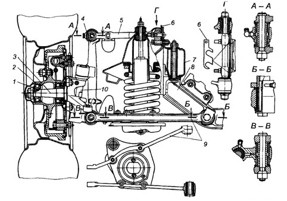
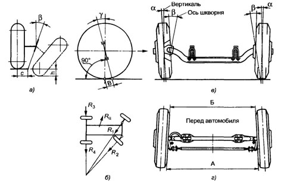

Установка управляемых колес
Для создания наименьшего сопротивления движению, уменьшения изнашивания шин и снижения расхода топлива управляемые колеса должны катиться в вертикальных плоскостях, параллельных продольной оси автомобиля. С этой целью управляемые колеса устанавливают на автомобиле с развалом в вертикальной плоскости и со схождением в горизонтальной плоскости. Углом развала управляемых колес называется угол, заключенный между плоскостью колеса и вертикальной плоскостью, параллельной продольной оси автомобиля. Угол развала считается положительным, если колесо наклонено от автомобиля наружу, и отрицательным при наклоне колеса внутрь. Угол развала необходим для того, чтобы обеспечить перпендикулярное расположение колес относительно поверхности дороги при деформации деталей моста под действием веса передней части автомобиля. Этот угол уменьшает плечо поворота — расстояние между точкой пересечения ния стабилизации управляемых колес оси шкворней наклонены в продольной и поперечной плоскостях.
Передний разрезной мост автомобилей ГАЗ-24-10 и ГАЗ-3102 «Волга» (с барабанными тормозными механизмами):
1 — стопорная шайба;
2 — ступица;
3 — поворотный кулак;
4— стойка;
5 — верхний рычаг;
6 — регулировочные прокладки;
7— продольная балка рамы;
8 — балка переднего моста;
9 — нижний рычаг;
10 — шкворень.
В результате уменьшается момент, необходимый для поворота управляемых колес, и, следовательно, облегчается поворот автомобиля. Угол развала обеспечивается конструкцией управляемого моста путем наклона поворотного кулака на 0—2° В процессе эксплуатации угол развала колес изменяется главным образом из-за износа втулок шкворней поворотных кулаков, подшипников ступицы колес и деформации балки переднего моста. При наличии угла развала колес колесо стремится катиться в сторону от автомобиля по дуге вокруг точки пересечения продолжения его оси с плоскостью дороги. Так как управляемые колеса связаны жесткой балкой моста, то качение колес по расходящимся дугам сопровождалось бы боковым скольжением. Для устранения этого явления колеса устанавливают со схождением, т. е. не параллельно, а под некоторым углом к продольной оси автомобиля. Угол схождения управляемых колес определяется разностью расстояний между колесами, которые замеряют сзади и спереди по краям ободьев на высоте оси колес. Угол расхождения колес у разных автомобилей от 0°20' до Г, а разность расстояний между колесами сзади и спереди 2—12 мм. В процессе эксплуатации углы схождения колес могут изменяться из-за из-носа втулок шкворней поворотных кулаков, шарнирных соединении рулевой трапеции и деформации ее рычагов. Регулировку угла схождения колес производят изменением длины поперечной рулевой тяги. Установка управляемых колес с одновременным развалом и схождением обеспечивает их прямолинейное качение по дороге без бокового скольжения. Каждому углу развала должен соответствовать определенный угол схождения колес, при котором сила сопротивления движению, расход топлива и износ шин будут минимальными. Обычно оптимальный угол схождения управляемых колес составляет 15—20 % от угла их развала.
Установка управляемых колес, установка передних колес и шкворней поворотных кулаков:
а и б — углы наклона шкворня в поперечной и продольной плоскостях соответственно;
в — угол развала колес;
г — схождение колес;
А и Б — расстояние между колесами, замеряемые соответственно сзади и спереди по краям ободьев на уровне оси колеса;
а — угол развала колес;
у — продольный наклон шкворня;
в — поперечный наклон шкворня;
с — расстояние между точкой пересечения продолжения оси шкворня и точкой касания колеса с плоскостью дороги;
h — расстояние, на которое опускается колесо из-за наклона шкворня вбок при повороте на 180°;
R — центробежная сила;
R1,R2,R3, R4 — реакции дороги .
.png)